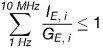
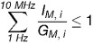
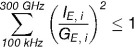
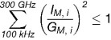

(Fundstelle: BGBl I 2013, 3271)
Anhang 2a
Immissionsbeiträge der elektrischen und magnetischen Felder aller Niederfrequenzanlagen und von Hochfrequenzanlagen mit Frequenzen zwischen 9 kHz und 10 MHz müssen die folgenden Bedingungen erfüllen:
Elektrische Felder:

mit
IE,i = Immissionsbeitrag des elektrischen Feldes bei der Frequenz i im Bereich von 1 Hz bis 10 MHz,
GE,i = Grenzwert der elektrischen Feldstärke bei der Frequenz i im Bereich von 1 Hz bis 10 MHz, gemäß Anhang 1a
Magnetische Felder:

mit
IM,i = Immissionsbeitrag des magnetischen Feldes bei der Frequenz i im Bereich von 1 Hz bis 10 MHz,
GM,i = Grenzwert der magnetischen Flussdichte bei der Frequenz i im Bereich von 1 Hz bis 10 MHz, gemäß Anhang 1a in Verbindung mit § 3
Anhang 2b
Immissionsbeiträge der elektrischen und magnetischen Felder von Hochfrequenzanlagen mit Frequenzen > 100 kHz müssen zusätzlich die folgenden Bedingungen erfüllen:
Elektrische Felder:

mit
IE,j = Immissionsbeitrag des elektrischen Feldes bei der Frequenz j im Bereich von 100 kHz bis 300 GHz (quadratisch gemittelt über 6-Minuten-Intervalle),
GE,j = Grenzwert der elektrischen Feldstärke bei der Frequenz j im Frequenzbereich von 100 kHz bis 300 GHz (quadratisch gemittelt über 6-Minuten-Intervalle), gemäß Anhang 1b
Magnetische Felder:

mit
IM,j = Immissionsbeitrag des magnetischen Feldes bei der Frequenz j im Bereich von 100 kHz bis 300 GHz (quadratisch gemittelt über 6-Minuten-Intervalle),
GM,j = Grenzwert der magnetischen Feldstärke bei der Frequenz j im Frequenzbereich von 100 kHz bis 300 GHz (quadratisch gemittelt über 6-Minuten-Intervalle), gemäß Anhang 1b.